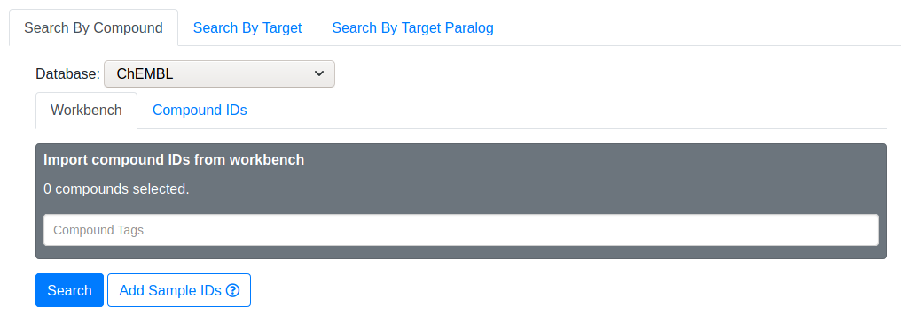
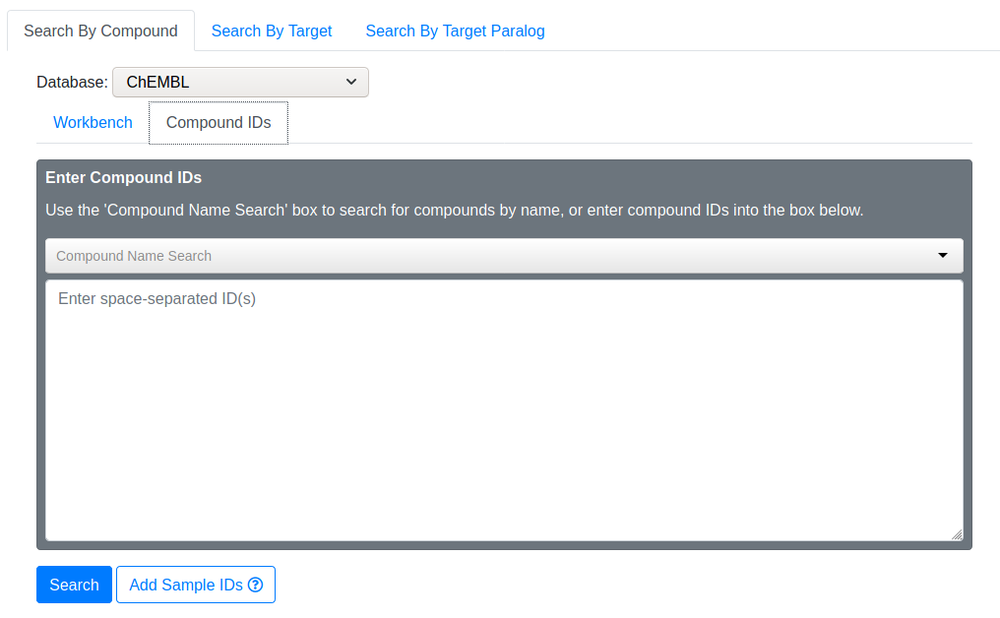
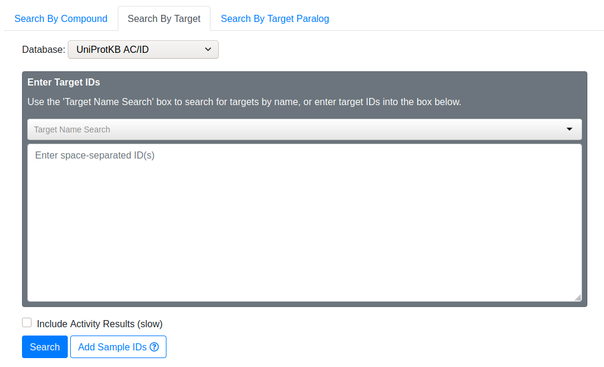
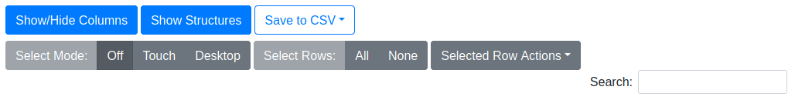

Drug-Target Search
Drug-Target Search utilizes the ChEMBL database to query relationships between small drug-like molecules and protein targets. There are currently 3 types of searches:
- Search By Compound
- Search By Target
- Search By Target Paralog
Search By Compound
In this type of search, you provide one or more drug molecules (usually ChEMBL IDs), and Drug-Target Search will return a list of proteins that the drug is known to target.
Database
By default, Drug-Target Search expects ChEMBL IDs when searching by compound. If you need to use other types of IDs (e.g. PubChem), you may change the database type, and ChemMine Tools will translate your IDs via the UniChem service.
Workbench

Instead of manually inputting compounds, you may retreive compounds from your Workbench using the tag system.
Compound IDs

Use this to manually input compound IDs. You may search for compounds by typing its name into the "Compound Name Search" area. The search box will offer suggestions as you type. If you notice your desired compound, select it and the corresponding ChEMBL ID will be added to your search IDs.
Sample IDs
For demonstration purposes, select "Use Sample IDs" to fill the compound ID box with some example ChEMBL IDs. Then click "Search" to continue.
Search By Target
In this type of search, you provide one or more protein targets (usually UniProt IDs), and Drug-Target Search will return a list of drug molecules that are known to act on the targets. This search mode is essentially the inverse of Search By Compound.
Database
By default, Drug-Target Search expects UniProt IDs when searching by target. If you need to use other types of IDs (e.g. Ensembl), you may change the database type, and ChemMine Tools will translate your IDs via the UniProt service.
Target IDs

Use this to manually input target IDs. You may search for targets by typing its name into the "Target Name Search" area. The search box will offer suggestions as you type. If you notice your desired target, select it and the corresponding UniProt ID will be added to your search IDs.
Sample IDs
For demonstration purposes, select "Use Sample IDs" to fill the target ID box with some example UniProt IDs. Then click "Search" to continue.
Include Activity Results
TODO
Search By Target Paralog

This mode is a variation of Search By Target, and is done in two steps. In the first step, you provide one or more protein targets (usually UniProt IDs), and Drug-Target Search will expand your query by finding paralogs of your provided targets. In the second step, Drug-Target Search performs essentially the same lookup as Search By Target.
Paralog Search Tool
Searching paralogs is the first step in Search By Target Paralog. You provide UniProt Accession IDs, and Drug-Target Search uses the Ensembl Biomart service to find paralogs of your original IDs. After entering your IDs and clicking "Add Paralogs", the paralogs of your original IDs will appear in the below search list.
Sample IDs
For demonstration purposes, select "Use Sample IDs" to fill the Accession ID box with some example UniProt IDs. Then click "Add Paralogs" to continue.
Search List
This search list shows the paralogs of your original IDs. The list is organized as units. A search unit comprises the original ID, and its associated paralogs. If you want to exclude certain paralogs from the target search, uncheck the box next to it. If you want to remove an entire search unit, click the trash icon on the right-hand side.
Result Tables
By Annotation
TODO
By Activity
TODO
Table Features

Show/Hide Columns
TODO
Show/Hide Structures
Toggles the visibility of the compound structure. If visible, the structure will be placed underneath the ChEMBL ID in each row.
Save to CSV
Exports the result table to a file in comma-separated value (CSV) format for use in other applications. You may export all columns, or only the visible columns, to the CSV file.
Select Mode
Controls the row selection style of the result table. "Off" disables manual selection actions entirely. "Touch" mode is ideal for touchscreen devices. In this mode you select/deselect rows by clicking/touching them individually. Selecting a different row does not deselect previous rows. "Desktop" mode mimicks a traditional desktop file manager. In this mode, only one row may be selected by a mouse click. Multiple individual rows may be selected by holding Ctrl while clicking rows, and a range of rows may be selected by holding Shift while clicking the first and last row of the desired range.
Select Rows
"All" automatically selects all rows in the table (including those not on the current page). "None" automatically deselects all rows. This behavior is irrespective of the Select Mode.
Selected Row Actions
Add Compounds to Workbench
Add compounds from selected rows to the ChemMine Tools workbench. Selected compounds will be checked for duplicates/database availability before being committed to workbench.
Add Compound IDs to Search
Add ChEMBL IDs from selected rows to the Compound IDs search box. Selected compounds will be deduplicated before being added to the search.
Add Accession IDs to Search
Add Accession IDs from selected rows to the Target IDs search box. Selected Accession IDs will be deduplicated before being added to the search.
Search box
Perform a text search on the result table. The search spans all columns and progressively searches as you type.